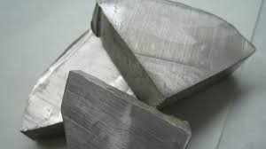

Sodyum periyodik cetvelde Na (Latince natrium sözcüğünden) simgesi ile gösterilen ve atom numarası 11 olan element. Sodyum yumuşak ve kaygan bir metal olup alkali metaller grubuna aittir.
Doğal bileşiklerin içinde (özellikle NaCl) bol miktarda bulunur.
Yüksek oranda reaktiftir, sarı bir alevle yanar, su ile şiddetli reaksiyon verir ve havada hızla oksitlenir. Dolayısıyla, vazelin, gazyağı gibi hava ve su ile temasını kesecek bir ortamda saklanması gerekir.
Ana sayfaya dön
